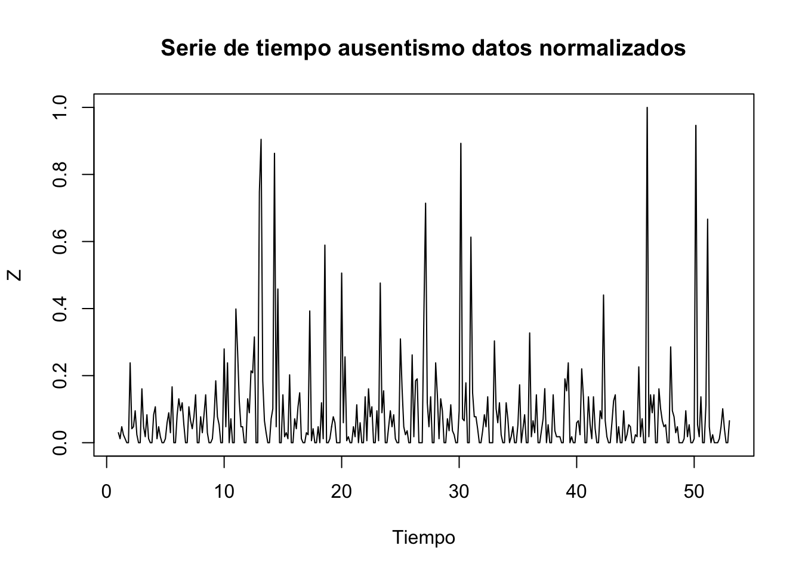
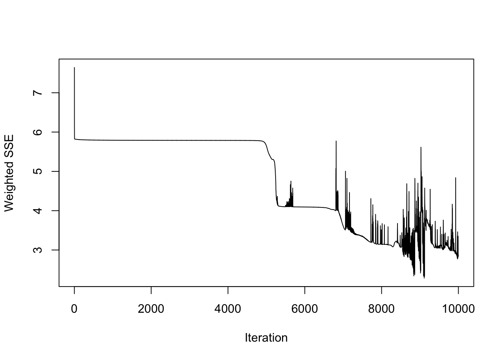
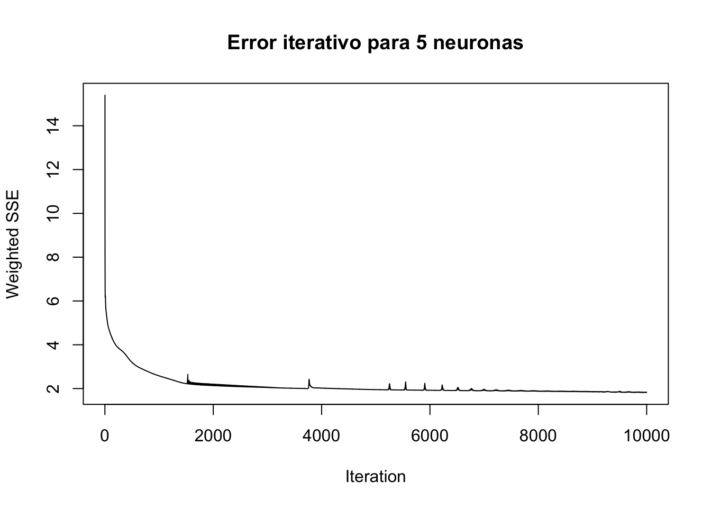

Capítulo 7 Redes Neuronales
Mediante el uso de modelos con series neuronales se puede tener una arquitectura que genera una memoria con sentido temporal lo que lo hace aplicable a las series de tiempo, se pueden tener varias neuronas que registran entradas y generan salidas a las capas del modelo, estas conexiones arbitrarias entre las neuronas permiten crear ciclos y temporalidad. Existen diferentes tipos de modelos de redes neuronales dependiendo de la forma como están dispuestas las entradas y las salida, los mas conocidos son la red neuronal recurrente (ELMAN) y la red neuronal con memoria a corto plazo (Jordan).
#Debido a las transformaciones realizadas anteriormente en ts_diaria, se redefine nuevamente para evitar conflicto con la clase del objeto en las operaciones posteriores.
# Agrupar por fecha y sumar las horas de ausencia (puede haber varias por día)
serie_diaria <- datos %>%
filter(!is.na(Fecha)) %>%
group_by(Fecha) %>%
summarise(Horas = sum(Absenteeism.time.in.hours, na.rm = TRUE)) %>%
arrange(Fecha)
# Rellenar fechas faltantes (por si hay días sin datos)
todas_las_fechas <- data.frame(
Fecha = seq.Date(min(serie_diaria$Fecha), max(serie_diaria$Fecha), by = "day")
)
serie_diaria <- todas_las_fechas %>%
left_join(serie_diaria, by = "Fecha") %>%
mutate(Horas = ifelse(is.na(Horas), 0, Horas))
ts_diaria <- ts(serie_diaria$Horas, frequency = 7)En este ejercicio se trabaja nuevamente con la serie ts_diaria construida en el capítulo 2.
## [1] "ts"Para el uso de redes neuronales se requiere de la normalización de los datos en formato serie de tiempo. A continuación se realiza la respectiva normalización.
ts_norm <- (ts_diaria-min(ts_diaria))/(max(ts_diaria)-min(ts_diaria))
plot(ts_norm, main="Serie de tiempo ausentismo datos normalizados",xlab="Tiempo", ylab="Z") Ahora comprobamos el tamaño del dataset para definir el tamaño del conjunto de datos de entrenamiento y de prueba.
## [1] 365Se define el conjunto de entrenamiento.
#definicion set de entrenamiento
tamano_train <- round(tamano_total*0.8, digits = 0)
train <- 0:(tamano_train-1)
train## [1] 0 1 2 3 4 5 6 7 8 9 10 11 12 13 14 15 16 17
## [19] 18 19 20 21 22 23 24 25 26 27 28 29 30 31 32 33 34 35
## [37] 36 37 38 39 40 41 42 43 44 45 46 47 48 49 50 51 52 53
## [55] 54 55 56 57 58 59 60 61 62 63 64 65 66 67 68 69 70 71
## [73] 72 73 74 75 76 77 78 79 80 81 82 83 84 85 86 87 88 89
## [91] 90 91 92 93 94 95 96 97 98 99 100 101 102 103 104 105 106 107
## [109] 108 109 110 111 112 113 114 115 116 117 118 119 120 121 122 123 124 125
## [127] 126 127 128 129 130 131 132 133 134 135 136 137 138 139 140 141 142 143
## [145] 144 145 146 147 148 149 150 151 152 153 154 155 156 157 158 159 160 161
## [163] 162 163 164 165 166 167 168 169 170 171 172 173 174 175 176 177 178 179
## [181] 180 181 182 183 184 185 186 187 188 189 190 191 192 193 194 195 196 197
## [199] 198 199 200 201 202 203 204 205 206 207 208 209 210 211 212 213 214 215
## [217] 216 217 218 219 220 221 222 223 224 225 226 227 228 229 230 231 232 233
## [235] 234 235 236 237 238 239 240 241 242 243 244 245 246 247 248 249 250 251
## [253] 252 253 254 255 256 257 258 259 260 261 262 263 264 265 266 267 268 269
## [271] 270 271 272 273 274 275 276 277 278 279 280 281 282 283 284 285 286 287
## [289] 288 289 290 291Se define el conjunto de prueba
## [1] 292 293 294 295 296 297 298 299 300 301 302 303 304 305 306 307 308 309 310
## [20] 311 312 313 314 315 316 317 318 319 320 321 322 323 324 325 326 327 328 329
## [39] 330 331 332 333 334 335 336 337 338 339 340 341 342 343 344 345 346 347 348
## [58] 349 350 351 352 353 354 355 356 357 358 359 360 361 362 363 364 365Se crea un marco de datos con n columnas, cada una de las cuales se construye avanzando un valor de la serie en el futuro, a través de una variable de tipo zoo.
y<-as.zoo(ts_norm)
x1<-Lag(y,k=1)
x2<-Lag(y,k=2)
x3<-Lag(y,k=3)
x4<-Lag(y,k=4)
x5<-Lag(y,k=5)
x6<-Lag(y,k=6)
x7<-Lag(y,k=7)
x8<-Lag(y,k=8)
x9<-Lag(y,k=9)
x10<-Lag(y,k=10)
x11 <- Lag(y, k = 11)
x12 <- Lag(y, k = 12)
ts_norm <- cbind(y,x1,x2,x3,x4,x5,x6,x7,x8,x9,x10,x11,x12)Se eliminan los valoers NA que pueden desplazar la serie
## [1] TRUE## [1] FALSESe definen por conveniencia los valores de entrada y salida de la red neuronal.
#Luego definimos los valores de entrada y salida de la red neuronal:
inputs <- ts_norm_Lag[,2:13]
outputs <- ts_norm_Lag[,1]7.1 Redes neuronales: ELMAN
Se crea una red tipo ELMAN y proceder a entrenarla con los datos previamente definidos.
El tercer parámetro indica que queremos crear cincto capas ocultas, una con cinco neuronas y así sucesivamente hasta una última capa con una neurona. Esto se ajustó al ver que el rendimiento del modelo aplicando solo dos capas no era adecuado. Además, indicamos una tasa de aprendizaje de 1, y también un número máximo de iteraciones de 10.000.
Con la función plotIterativeError podemos ver cómo ha evolucionado el error de red a lo largo de las iteraciones de entrenamiento y se encuentra que este tiende a 0,esto indica que el modelo ha logrado aprender una representación correcta de los datos.

Ahora se realiza una evaluación del modelo solo sobre el conjunto de entrenamiento. Esto es útil para evaluar el overfitting (comparando errores en entrenamiento vs prueba).
7.1.1 Desempeño del modelo ELMAN con datos de entrenamiento.
# Se elimina el conjunto de test de las entradas y salidas de las neuronas para realizar el ajuste del modelo a los datos reales
y_train <- as.vector(outputs[-test])
predtrain1 <- predict(fit, inputs[-test])Aunque los modelos (como redes neuronales) aprenden mejor con datos normalizados, la evaluación y la interpretación de resultados (por ejemplo, errores absolutos, visualización de predicciones) deben hacerse en la escala original para que tengan sentido.
El siguiente código realiza el proceso conocido como “desnormalización” o “re-escalado inverso” de los datos que han sido previamente normalizados.
y_train<-y_train*(max(ts_diaria)-min(ts_diaria))+min(ts_diaria)
predtrain1<-predtrain1*(max(ts_diaria)-min(ts_diaria))+min(ts_diaria)El gráfico muestra el ajuste del modelo de red neuronal ELMAN sobre los datos del conjunto de entrenamiento. La línea negra representa los valores reales del fenómeno analizado (en este caso, el ausentismo normalizado), mientras que la línea roja corresponde a las predicciones generadas por el modelo para esas mismas observaciones. Un buen ajuste se refleja en que ambas líneas estén cercanas y sigan una trayectoria similar, lo que indica que el modelo ha aprendido correctamente la estructura de los datos.
n <- min(length(y_train), length(predtrain1))
pt1 <- plotly::plot_ly(x = 1:n, y = y_train[1:n], type = 'scatter', mode = 'lines',
line = list(color = 'black'), name = 'Datos reales') %>%
plotly::add_lines(x = 1:n, y = predtrain1[1:n],
line = list(color = 'red'), name = 'Predicciones') %>%
plotly::layout(
title = "Ajuste de las predicciones modelo ELMAN en datos de entrenamiento",
xaxis = list(title = "Observación"),
yaxis = list(title = "Ausentismo normalizado")
)
pt1En este caso se evidencia el comportamiento de las 291 observaciones que hacen parte del dataset de entrenaiento y se observan ciertas diferencias. Aunque las predicciones tratan de ajustarse a los datos reales, no los siguen completamente bien, sobre todo se evidencia que no hay ausencias de 0 horas en la predicción.
7.1.2 Desempeño del modelo ELMAN con datos de prueba.
Este conjunto de bloques de código evalúa el desempeño del modelo de red neuronal ELMAN sobre el conjunto de prueba. Primero, se extraen las salidas verdaderas (y_test) y se calculan las predicciones del modelo (predtest1) usando únicamente las observaciones que no formaron parte del conjunto de entrenamiento. Luego, ambas series —que previamente fueron normalizadas— se transforman nuevamente a su escala original mediante una operación de desnormalización basada en el rango de los datos originales (ts_diaria).
# se elimina el conjunto de test de las entradas y salidas de las neuronas para realizar el ajuste del modelo a los datos reales
y_test <- as.vector(outputs[-train])
predtest1 <- predict(fit, inputs[-train])y_test<-y_test*(max(ts_diaria)-min(ts_diaria))+min(ts_diaria)
predtest1<-predtest1*(max(ts_diaria)-min(ts_diaria))+min(ts_diaria)Finalmente, se genera un gráfico interactivo en el que se superponen los valores reales (línea negra) y las predicciones (línea roja) para cada observación del conjunto de prueba (62 Observaciones). Este gráfico permite evaluar visualmente qué tan bien el modelo ELMAN generaliza a datos nuevos, y si sus predicciones son razonablemente cercanas a los valores reales.
pt2 <- plotly::plot_ly(x = 1:length(y_test), y = y_test, type = 'scatter', mode = 'lines',
line = list(color = 'black'), name = 'Datos reales') %>%
plotly::add_lines(x = 1:length(predtest1), y = predtest1,
line = list(color = 'red'), name = 'Predicciones') %>%
plotly::layout(title = "Ajuste de las predicciones modelo ELMAN en datos de prueba",
xaxis = list(title = "Observación"),
yaxis = list(title = "Ausentismo"))
pt2Mientras que el gráfico basado en y_train y predtrain1 busca evaluar qué tan bien el modelo de red neuronal ELMAN fue capaz de aprender los patrones presentes en el conjunto de entrenamiento, el gráfico basado en y_test y predtest1 tiene un objetivo mucho más crítico: medir la capacidad de generalización del modelo a datos nunca antes vistos.
Esto es importante porque un modelo que memoriza los datos de entrenamiento sin poder predecir con precisión sobre datos nuevos probablemente esté sobreajustado. En cambio, si las predicciones sobre el conjunto de prueba son buenas, podemos confiar en que el modelo será útil en contextos reales o futuros.
Ambos gráficos se desnormalizan para facilitar la interpretación, pero su utilidad analítica es diferente: el primero es introspectivo (¿aprendió el modelo?), y el segundo es prospectivo (¿puede predecir bien?). En este caso, se ve que el modelo tuvo problemas con los datos atípicos y prediciendo los días de 0 horas de ausentismo. Lo mejor sería ajustar los hiperparámetros del modelo para tratar de obtener un mayor ajuste respecto a las métricas de rendimiento.
7.2 Redes neuronales: JORDAN
La red Jordan es un tipo de red neuronal recurrente, donde parte de la salida del modelo se retroalimenta a sí misma en el siguiente paso temporal. Es útil para series temporales o datos secuenciales, ya que puede recordar patrones del pasado inmediato.
Se solicitan 10 capas ocultas y un factor de tasa de aprendizaje de 1. El resultado también se parcialmente a la serie original
 La gráfica anterior muestra que el error en el modelo JORDAN converge a cero, por lo que se espera un ajuste rápido del modelo. Esto indica que el modelo ha logrado aprender una representación correcta de los datos.
7.2.1 Desempeño del modelo JORDAN con datos de entrenamiento.
Para identificar el desempeño del modelo JORDAN con datos de entrenamiento primero se elimina el conjunto de test de las neuronas con el objetivo de realizar el modelo con datos reales, después para interpretarlas correctamente (en horas reales de ausentismo) debemos desnormalizar, esto es invertir el escalamiento que hicimos al inicio por tanto las predicciones están en el mismo rango real.
# Se elimina el conjunto de test de las entradas y salidas de las neuronas para realizar el ajuste del modelo a los datos reales
y_j_train <- as.vector(outputs[-test])
predtrain2 <- predict(fit2, inputs[-test])y_j_train<-y_j_train*(max(ts_diaria)-min(ts_diaria))+min(ts_diaria)
predtrain2<-predtrain2*(max(ts_diaria)-min(ts_diaria))+min(ts_diaria)pt3 <- plotly::plot_ly(x = 1:length(y_j_train), y = y_j_train, type = 'scatter', mode = 'lines',
line = list(color = 'black'), name = 'Datos reales') %>%
plotly::add_lines(x = 1:length(predtrain2), y = predtrain2,
line = list(color = 'red'), name = 'Predicciones') %>%
plotly::layout(title = "Ajuste de las predicciones modelo JORDAN en datos de entrenamiento",
xaxis = list(title = "Observación"),
yaxis = list(title = "Ausentismo normalizado"))
pt3En el grafico se muestra el modelo de red JORDAN junto con los datos de entrenamiento. Teniendo en cuenta que las líneas de puntos rojos serían las predicciones y la línea azul serían los valores reales, y el modelo funciona bien si ambas líneas están muy cerca, vemos que la línea roja (predicciones) sigue en parte la forma de la línea negra (datos reales), especialmente en zonas de baja variación, sin embargo, se observan varios picos exagerados en la línea de predicción, que no están presentes en los datos reales. Entre las observaciones entre 90 a 130 y cerca de 180, la red hace predicciones muy altas o negativas, incluso llegando a más de 600 o menos de -100, mientras que los datos reales se mantienen mucho más bajos. En general, el modelo intenta capturar la forma, pero sufre de inestabilidad o exceso de sensibilidad a ciertos patrones, lo cual puede ser síntoma de sobreajuste o mal entrenamiento.
7.2.2 Desempeño del modelo JORDAN con datos de prueba.
Análogamente se realiza el mismo procedimiento que se hizo con los datos de entrenamiento, solo cambia los datos. En este momento se pone aprueba el modelo con el objetivo de identificar la precisión sobre los datos nuevos.
# se elimina el conjunto de test de las entradas y salidas de las neuronas para realizar el ajuste del modelo a los datos reales
y_j_test <- as.vector(outputs[-train])
predtest2 <- predict(fit2, inputs[-train])y_j_test<-y_j_test*(max(ts_diaria)-min(ts_diaria))+min(ts_diaria)
predtest2<-predtest2*(max(ts_diaria)-min(ts_diaria))+min(ts_diaria)pt4 <- plotly::plot_ly(x = 1:length(y_j_test), y = y_j_test, type = 'scatter', mode = 'lines',
line = list(color = 'black'), name = 'Datos reales') %>%
plotly::add_lines(x = 1:length(predtest2), y = predtest2,
line = list(color = 'red'), name = 'Predicciones') %>%
plotly::layout(title = "Ajuste de las predicciones modelo JORDAN en datos de prueba",
xaxis = list(title = "Observación"),
yaxis = list(title = "IPC"))
pt4En la gráfica podemos visualizar que la línea negra (datos reales) es bastante estable y se mantiene en valores bajos, mientras que la línea roja (predicciones) muestra mucha más variación y se aleja notablemente de los valores reales en muchos puntos. Se observan picos de predicción de más de 2000, cuando los valores reales no superan los 100 en la mayoría de las observaciones, esto sugiere que el modelo tiene alta varianza y probablemente está sobreajustando o captando ruido en lugar de patrones reales. Aunque los valores reales tienen ligeros picos y cambios, el modelo no los sigue, las predicciones muestran una dinámica completamente diferente, con cambios abruptos que no reflejan la tendencia real, en resumen, el modelo JORDAN no está prediciendo con precisión los valores reales, las predicciones están sobreestimando fuertemente en muchas observaciones.
7.3 Rendimiento Redes ELMAN y JORDAN
7.3.1 Rendimiento ELMAN
# Calcular errores
errores_elman <- y_test - predtest1
# Métricas de evaluación
mae <- mae(y_test, predtest1) # Error absoluto medio
rmse <- rmse(y_test, predtest1) # Raíz del error cuadrático medio
me <- mean(errores_elman) # Error medio (ME)
acf1 <- acf(errores_elman, plot = FALSE)$acf[2] # ACF con rezago 1
# Mostrar resultados
cat("MAE :", round(mae, 4), "\n")## MAE : 16.7244## RMSE : 34.0165## ME : 0.2568## ACF1 : -0.0817.3.2 Rendimiento Jordan
# Calcular errores
errores_jordan <- y_j_test - predtest2
# Métricas de evaluación
mae <- mae(y_j_test, predtest2) # Error absoluto medio
rmse <- rmse(y_j_test, predtest2) # Raíz del error cuadrático medio
me <- mean(errores_jordan) # Error medio (ME)
acf1 <- acf(errores_jordan, plot = FALSE)$acf[2] # ACF con rezago 1
# Mostrar resultados
cat("MAE :", round(mae, 4), "\n")## MAE : 172.283## RMSE : 407.6552## ME : -104.5171## ACF1 : 0.1833** MAE (Mean Absolute Error)**
ELMAN: 16.7244 JORDAN: 172.283 - ELMAN muestra un menor error absoluto medio.
RMSE (Root Mean Square Error): ELMAN: 34.0165 JORDAN: 407,6752 - ELMAN tiene un RMSE menor, indicando menor variación entre predicciones y valores reales.
ME (Mean Error) ELMAN:0.2568 JORDAN: -104.5171 - El modelo JORDAN tiene un error medio más bajo, lo que indica que sus predicciones están, en promedio más cerca de los valores reales.
ACF1 (Autocorrelation of Residuals at Lag 1) ELMAN: -0.081 JORDAN: 0.1833 - ELMAN muestra menor autocorrelación en los residuos, indicando que los errores están menos correlacionados y probablemente son más independientes.
Con base en la comparación de métricas de rendimiento, se concluye que el modelo ELMAN supera significativamente al modelo JORDAN en la predicción del ausentismo laboral. ELMAN presenta un MAE (16.72) y un RMSE (34.01) considerablemente menores que los del modelo JORDAN (MAE: 172.28, RMSE: 407.68), lo cual indica un mejor ajuste general y menor dispersión en los errores de predicción.
Aunque JORDAN muestra un ME negativo (-104.51), que podría interpretarse como una menor sobreestimación en promedio, este valor tan alto sugiere una gran desviación sistemática, mientras que el ME de ELMAN (0.25) está cerca de cero, lo que implica predicciones más equilibradas. Además, el menor valor de autocorrelación de los residuos (ACF1) en ELMAN (-0.081) frente a JORDAN (0.1833) indica que los errores del modelo ELMAN están menos correlacionados en el tiempo, y por tanto, es menos probable que haya patrones no capturados en los residuos.
El modelo ELMAN es superior al modelo JORDAN en la mayoria de las métricas analizadas, mostrando menor error y mejor ajuste a los datos reales. Por lo tanto, ELMAN arroja mejores resultado al presentar el mejor rendimiento de los 2 modelos, indicando predicciones más precisas y cercanas a los valores reales del ausentismo laboral. Las redes Elman son bastante útiles para modelar datos secuenciales, ya que pueden incorporar información del contexto previo para realizar mejores predicciones.
7.3.3 Conclusión
La red neuronal JORDAN es un tipo de red recurrente que incorpora retroalimentación desde la capa de salida hacia una capa de contexto, lo que le permite mantener una memoria limitada del comportamiento pasado de la serie. Esta capacidad la hace especialmente valiosa en el análisis de series temporales, donde las observaciones anteriores influyen en las futuras. En este caso, en el modelo con los datos de entrenamiento, la red logra seguir la tendencia general en varios tramos, pero presenta picos artificiales extremos que no reflejan los datos reales, así mismo en los datos de prueba, las predicciones son mucho más erráticas y se alejan fuertemente de los valores reales. El modelo memoriza patrones del entrenamiento, pero no logra generalizar a nuevos datos. Esto es un claro indicio de overfitting. Por otro lado, en ambas gráficas, la red genera predicciones con valores extremadamente altos o bajos, incluso cuando los datos reales permanecen estables, este comportamiento sugiere que la red es demasiado sensible a pequeñas variaciones en la entrada o no está correctamente regularizada. La arquitectura o el preprocesamiento pueden estar mal ajustados. Es probable que se necesite una normalización más robusta, menos neuronas ocultas o aplicar regularización. Además, la variable de estudio tiene una dinámica relativamente estable con algunos picos, pero la red JORDAN no logra anticipar ni seguir coherentemente esos patrones. Esto puede deberse a una mala elección del número de rezagos (lags) o a que la red no está explotando bien la dependencia temporal.
ELMAN ofrece mejores resultados al lograr mayor precisión y menor error en las predicciones. Este desempeño se debe a su capacidad para modelar relaciones secuenciales en los datos, haciendo uso de la retroalimentación interna que caracteriza a las redes recurrentes. Por lo tanto en este caso se consideraría una alternativa más robusta para tareas de pronóstico basadas en series temporales como el ausentismo laboral, aunque su predicción tampoco es muy precisa. Es importante considerar aspectos como el sobreajuste (overfitting) y el ajuste de hiperparámetros para asegurar que el modelo ELMAN no solo funcione bien sobre los datos de entrenamiento, sino que también generalice adecuadamente en nuevos datos.
Para optimizar estos parámetros en ELMAN, es recomendable utilizar técnicas como búsqueda en rejilla (grid search) o búsqueda aleatoria (random search), idealmente combinadas con validación cruzada. Estas técnicas permiten explorar combinaciones y encontrar la configuración que proporciona el mejor rendimiento de generalización.